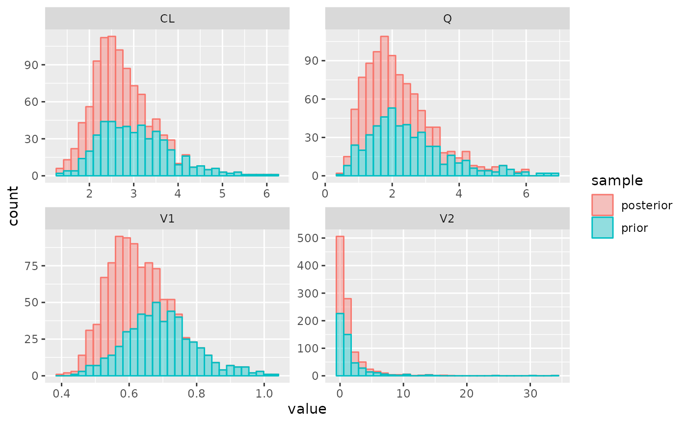
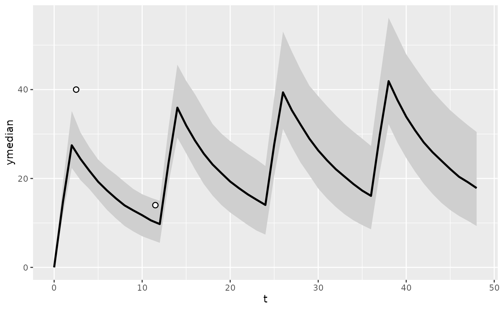
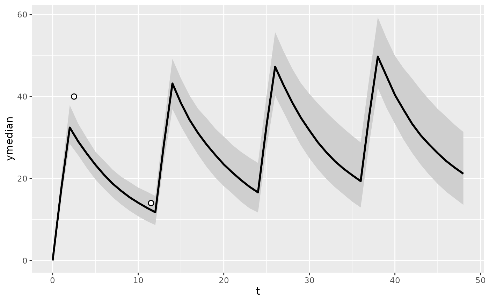

Vancomycin
example-vanco.RmdThis examples shows how to implement the vancomycin population PK model published by Thomson et al (JAC 200, http://www.ncbi.nlm.nih.gov/pubmed/19299472), and sample from the posterior for the individual patients after TDM.
We will first create the Stan model and sample from the posterior. Afterwards, we will leverage the PKPDsim model in the pkvancothomson library to simulate the posterior for the dependent variable and create a confidence interval plot.
First, we define the model and parameters:
parameters <- list(
CL = 2.99,
Q = 2.28,
V2 = 0.732,
V1 = 0.675
)
iiv <- list(
CL = 0.27,
Q = 0.49,
V1 = 0.15,
V2 = 1.3
)
ruv <- list(add = 1.6, prop = 0.15)
model <- new_stan_model(
parameters = parameters,
parameter_definitions = list(
"CL" = "CL * (1.0 + 0.0154 * ((CRCL[j] * 16.6667) - 66.0))",
"Q" = "Q",
"V1" = "V1 * WT[j]",
"V2" = "V2 * WT[j]",
"KA" = "0"
),
covariate_definitions = list(
"CRCL" = "real", # CrCl in L/hr
"WT" = "real" # WT in kg
),
solver = "pmx_solve_twocpt",
scale = "(V1 * mean(WT))",
verbose = T
)
model_file <- write_stan_model(model)and compile the model:
mod <- load_model(
model_file,
force = T,
verbose = T
)Define the input data and prepare for use in Stan:
regimen <- new_regimen(
amt = 1500,
n = 4,
times = c(0, 12, 24, 36),
type = 'infusion',
t_inf = 2
)
covariates <- list(
WT = new_covariate(value = 70, unit = "kg"),
CRCL = new_covariate(value = 5, unit = "l/hr")
)
tdm_data <- data.frame(
t = c(2.5, 11.5),
dv = c(40, 14)
)
data <- new_stan_data(
regimen,
covariates,
tdm_data,
dose_cmt = 2,
parameters = parameters,
iiv = iiv,
ruv = list(
prop = 0.15,
add = 1.6
),
ltbs = FALSE
)Then, we can sample from the posterior using:
post <- get_mcmc_posterior(
mod = mod,
data = data
)## Running MCMC with 1 chain...
##
## Chain 1 Iteration: 1 / 1000 [ 0%] (Warmup)
## Chain 1 Iteration: 50 / 1000 [ 5%] (Warmup)
## Chain 1 Iteration: 100 / 1000 [ 10%] (Warmup)
## Chain 1 Iteration: 150 / 1000 [ 15%] (Warmup)
## Chain 1 Iteration: 200 / 1000 [ 20%] (Warmup)
## Chain 1 Iteration: 250 / 1000 [ 25%] (Warmup)
## Chain 1 Iteration: 300 / 1000 [ 30%] (Warmup)
## Chain 1 Iteration: 350 / 1000 [ 35%] (Warmup)
## Chain 1 Iteration: 400 / 1000 [ 40%] (Warmup)
## Chain 1 Iteration: 450 / 1000 [ 45%] (Warmup)
## Chain 1 Iteration: 500 / 1000 [ 50%] (Warmup)
## Chain 1 Iteration: 501 / 1000 [ 50%] (Sampling)
## Chain 1 Iteration: 550 / 1000 [ 55%] (Sampling)
## Chain 1 Iteration: 600 / 1000 [ 60%] (Sampling)
## Chain 1 Iteration: 650 / 1000 [ 65%] (Sampling)
## Chain 1 Iteration: 700 / 1000 [ 70%] (Sampling)
## Chain 1 Iteration: 750 / 1000 [ 75%] (Sampling)
## Chain 1 Iteration: 800 / 1000 [ 80%] (Sampling)
## Chain 1 Iteration: 850 / 1000 [ 85%] (Sampling)
## Chain 1 Iteration: 900 / 1000 [ 90%] (Sampling)
## Chain 1 Iteration: 950 / 1000 [ 95%] (Sampling)
## Chain 1 Iteration: 1000 / 1000 [100%] (Sampling)
## Chain 1 finished in 0.4 seconds.Summary info about the posterior:
post## Parameters:
## posterior_mode mean median sd q5 q95 rhat
## CL 2.477 2.508 2.484 0.500 1.730 3.396 0.999
## Q 1.595 2.015 1.822 0.919 0.949 3.760 0.999
## V2 0.263 1.191 0.467 2.103 0.081 4.274 1.000
## V1 0.567 0.582 0.579 0.063 0.482 0.691 1.003
##
## Observed data, posterior:
## type time dv mean loc pct pct5 pct95
## 1 pk 2.5 40 30.99324 -----|----o 0.992 26.554420 35.95100
## 2 pk 11.5 14 12.46177 -----|---o- 0.772 9.294978 15.76241Plot parameter distributions:
plot_params(post)
We can now generate the posterior for the dependent value using the PKPDsim model.
First we define an additional required covariates and a mapping between parameters in the PKPDposterior model and the PKPDsim model.
mapping <- list("V1" = "V") # mapping between parameters in the
covariates$CL_HEMO <- new_covariate(0) # required covariate for PKPDsim modelThe PKPDsim model package pkvancothomson that is used in this example can be installed using the PKPDmodels repository available here. After cloning this repository, install the pkvancothomson package using:
model_from_api("models/pk_vanco_thomson.json5", to_package = TRUE, install_all = TRUE)Then we can simulate the posterior of the dependent variable:
library(pkvancothomson)
pred_post <- sim_from_draws(
post,
model = pkvancothomson::model(),
map = mapping,
parameters = list( # required additional parameters for PKPDsim-model
TH_CRCL = 0.0154,
TDM_INIT = 0
),
regimen = regimen,
covariates = covariates,
n = 200,
summarize = TRUE
)
pred_prior <- sim_from_draws(
post,
model = pkvancothomson::model(),
map = mapping,
parameters = list(TH_CRCL = 0.0154, TDM_INIT = 0),
regimen = regimen,
covariates = covariates,
prior = TRUE,
n = 200,
summarize = TRUE
)Now we can plot the confidence interval for the posterior and prior predictions using:
plot_predictions(
pred_prior,
obs = tdm_data
)
plot_predictions(
pred_post,
obs = tdm_data
)